Download climate data
climate_data.RmdColOpenData can be used to access open climate data from Colombia. This climate data is retrieved from the Institute of Hydrology, Meteorology and Environmental Studies (IDEAM). The climate module allows you to consult climate data for any Region of Interest (ROI) inside the country and aggregate for different frequencies like day, week, month or year.
The available information from IDEAM can be accessed using specific internal tags as follows:
| Tags | Variable |
|---|---|
| TSSM_CON | Dry-bulb Temperature |
| THSM_CON | Wet-bulb Temperature |
| TMN_CON | Minimum Temperature |
| TMX_CON | Maximum Temperature |
| TSTG_CON | Dry-bulb Temperature (Termograph) |
| HR_CAL | Relative Humidity |
| HRHG_CON | Relative Humidity (Hydrograph) |
| TV_CAL | Vapour Pressure |
| TPR_CAL | Dew Point |
| PTPM_CON | Precipitation (Daily) |
| PTPG_CON | Precipitation (Hourly) |
| EVTE_CON | Evaporation |
| FA_CON | Atmospheric Phenomenon |
| NB_CON | Cloudiness |
| RCAM_CON | Wind Trajectory |
| BSHG_CON | Solar Luminosity |
| VVAG_CON | Wind Speed |
| DVAG_CON | Wind Direction |
| VVMXAG_CON | Maximum Wind Speed |
| DVMXAG_CON | Maximum Wind Direction |
Each variable’s observation is subject to to the availability of stations in the ROI and the stations’ status (active, maintenance or suspended).
For this vignette we will retrieve data for the city of Manizales in Colombia. We will download Dry-bulb temperature from 2013 to 2016, to observe the increase in the temperature during 2015 and 2016 due to the impact of El Nino (ENSO).
We will first load the necessary libraries.
Retrieving climate data for a Region of Interest (ROI)
To retrieve climate data for any ROI in the country, we can use the
function download_climate, which downloads data from
climate stations contained inside a given geometry from a ROI. The
function has the following parameters:
-
geometry:sfobject containing the geometry for a given ROI. This geometry can be either a POLYGON or MULTIPOLYGON.(see sf library for further details) -
start_date: Character with the first date to consult in format “YYYY-MM_DD” -
end_date: Character with the last date to consult in format “YYYY-MM_DD” -
frequency: Character with the aggregation frequency. Can be “day”, “week”, “month” or”year” -
tags: Character containing tags to consult. -
group: Boolean for data aggregation, if FALSE, returns the data from each individual station in ROI.(Default = FALSE)
For this example, we will need to create a spatial polygon around the city of Manizales and use that as our ROI to retrieve the climate data.
# Define coordinates (Bounding box around Manizales)
lat <- c(5.166278, 5.166278, 4.982247, 4.982247, 5.166278)
lon <- c(-75.678072, -75.327859, -75.327859, -75.678072, -75.678072)
# Use sf to create a polygon and turn it into a geometry
polygon <- st_polygon(x = list(cbind(lon, lat))) %>% st_sfc()
# Turn geometry into sf object
roi <- st_as_sf(polygon)
# plot polygon for reference
leaflet(roi) %>%
addProviderTiles("OpenStreetMap") %>%
addPolygons(
stroke = TRUE,
weight = 2,
color = "#2e6930",
fillColor = "#2e6930",
opacity = 0.6
)With our new ROI, we can make a first exploration to check if there
are any stations inside the ROI, using the function
stations_in_roi
stations <- stations_in_roi(roi)
print(stations)
#> Simple feature collection with 129 features and 21 fields
#> Geometry type: POINT
#> Dimension: XY
#> Bounding box: xmin: -75.67119 ymin: 4.983333 xmax: -75.33222 ymax: 5.163167
#> CRS: NA
#> # A tibble: 129 × 22
#> ...1 codigo nombre categoria tecnologia estado departamento municipio
#> <dbl> <dbl> <chr> <chr> <chr> <chr> <chr> <chr>
#> 1 138 26155220 VILLAMARIA… Climátic… Automátic… Activa Caldas Villamar…
#> 2 139 26155210 TORRE 4 - … Climátic… Automátic… Suspe… Caldas Manizales
#> 3 140 26155230 EMAS - AUT… Climátic… Automátic… Activa Caldas Manizales
#> 4 266 26155110 AEROPUERTO… Sinóptic… Convencio… Activa Caldas Manizales
#> 5 749 26155170 TESORITO F… Climátic… Automátic… Activa Caldas Manizales
#> 6 1119 26157090 PLAYA LA [… Limnimét… Convencio… Suspe… Caldas Manizales
#> 7 2157 26157100 SAN GABRIE… Limnimét… Convencio… Activa Caldas Manizales
#> 8 2312 26157060 RIO CLARO … Limnimét… Convencio… Suspe… Caldas Villamar…
#> 9 2314 26155160 PALESTINA … Meteorol… Convencio… Suspe… Caldas Chinchina
#> 10 2326 26157080 CHUPADEROS… Limnigrá… Convencio… Suspe… Caldas Manizales
#> # ℹ 119 more rows
#> # ℹ 14 more variables: latitude <dbl>, longitude <dbl>, altitud <dbl>,
#> # fecha_instalacion <dttm>, area_operativa <chr>, corriente <chr>,
#> # area_hidrografica <chr>, zona_hidrografica <chr>,
#> # subzona_hidrografica <chr>, entidad <chr>, fecha_suspension <chr>,
#> # mpio_cdpmp <chr>, dpto_ccdgo <chr>, geometry <POINT>We can see that in the region there are 129 stations with different categories, which means not all of them hold record for the same variables. Also, a lot of them were suspended, which means they are no longer taking any extra observations, however, we still can access the historical data.
Now that we have confirmed that there are meteorological stations in
the area, we will access the Dry-bulb temperature from 2013 to 2016. To
do this we will use download_climate. The Dry-bulb
temperature is under the tag “TSSM_CON”.
db_temperature_roi <- download_climate(
geometry = roi,
start_date = "2013-01-01",
end_date = "2016-12-31",
frequency = "day",
tags = "TSSM_CON",
group = TRUE
)With the recorded data we can plot the time series, for the four years.
ggplot(data = db_temperature_roi) +
geom_line(aes(x = dates, y = TSSM_CON)) +
ggtitle("Dry-bulb Temperature") +
xlab("Date") +
ylab("Dry-bulb temperature [C]") +
theme_bw()
#> Warning: Removed 61 rows containing missing values (`geom_line()`).
Retrieving climate data for municipality
To make the download process easier, and avoid the creation of already known geometries like municipalities, ColOpenData offers a different function, to download data using the municipalities DIVIPOLA code. This codification is standardized for the whole country, and contains a department code (first two digits) and the municipality code (last three digits), for a final five digit string. The codes for each municipality and department can be consulted in the following table. To replicate our previous example we only need the code for Manizales, which is “17001”.
The function download_climate_mpio will require almost
the same arguments than download_climate, :
-
code: Character with the DIVIPOLA code for the municipality. -
start_date: Character with the first date to consult in format “YYYY-MM_DD”. -
end_date: Character with the last date to consult in format “YYYY-MM_DD”. -
frequency: Character with the aggregation frequency. Can be “day”, “week”, “month” or”year”. -
tags: Character containing tags to consult. -
group: Boolean for data aggregation, if FALSE, returns the data from each individual station in the municipality.(Default = FALSE).
db_temperature_mpio <- download_climate_mpio(
code = "17001",
start_date = "2013-01-01",
end_date = "2016-12-31",
frequency = "day",
tags = "TSSM_CON",
group = TRUE
)
ggplot(data = db_temperature_mpio) +
geom_line(aes(x = dates, y = TSSM_CON)) +
ggtitle("Dry-bulb Temperature") +
xlab("Date") +
ylab("Dry-bulb temperature [C]") +
theme_bw()
#> Warning: Removed 61 rows containing missing values (`geom_line()`).